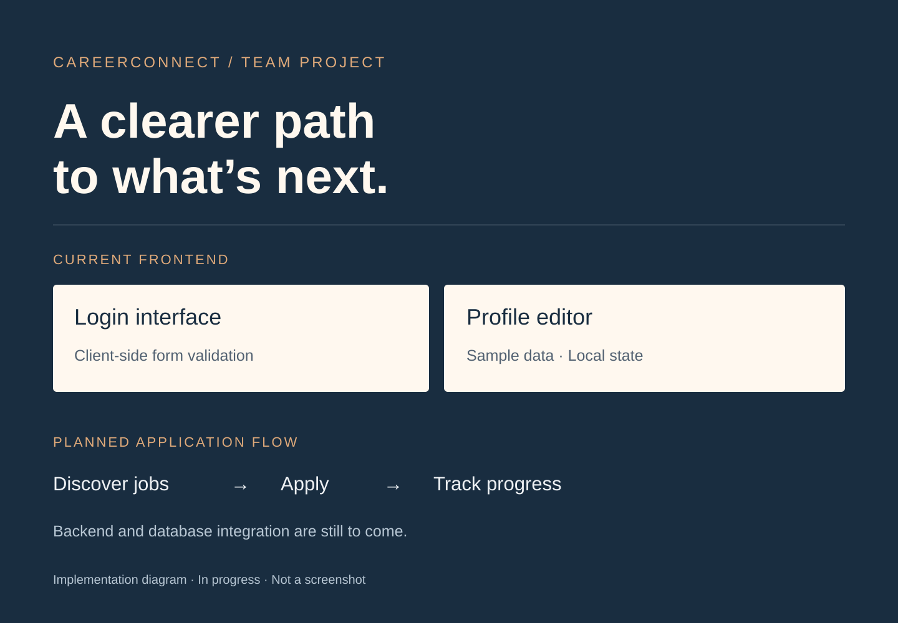

04 / Team project / In progress · Fall 2026
CareerConnect
A team project for SOEN 341 (Software Process) at Concordia University. We are building a central place for job seekers and recruiters to manage job discovery and applications.
- My role
- Team contributor
- Context
- SOEN 341 · Concordia
- Status
- In progress · Fall 2026

Making applications easier to follow.
Job seekers often spread their search across job boards, spreadsheets, and email. CareerConnect aims to bring job discovery and application tracking together, with a complementary workflow for recruiters.
I’m contributing as part of a five-person team for SOEN 341 at Concordia University in Fall 2026.
What’s implemented so far
The frontend currently includes login and profile interfaces built with React and TypeScript. The login form includes client-side validation, and the profile editor uses sample data held in client-side state.
The application is not yet connected to a backend or database. The login interface does not yet provide working authentication.
Working as a team
This project is an opportunity to practise Agile teamwork alongside implementation: discussing requirements, tracking issues, documenting progress, and coordinating work through GitHub.
The interface shown in the project is a shared team outcome. My role here is presented as a team contribution rather than attributing every screen or feature to myself.
Tools & next steps
- React + TypeScript
- Typed UI components, forms, and client-side state.
- Vite + Tailwind CSS
- Frontend development tooling and responsive styling.
- GitHub
- Version control, issues, and shared project documentation.
Planned application workflow
Job seekers will be able to discover roles, apply, and track progress. Recruiters will be able to manage job postings. The planned backend stack includes Node.js, Express, PostgreSQL, and Prisma.
In progress. Backend integration, persisted accounts, job-search features, and application tracking are planned work. The team repository is private.